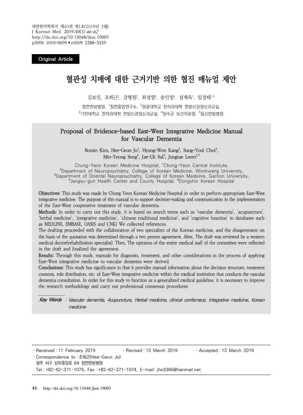

Proposal of Evidence-based East-West Integrative Medicine Manual for Vascular Dementia
Kim B, Jo HG, Kang HW, Choi SY, Song MY, Sul JU, Leem J
Journal of Korean Medicine 40(1):46-62

첫 장 · 오픈액세스First page · open access
논문 소개Summary
혈관성 치매의 동서협진을 위한 근거 기반 매뉴얼입니다. 메드라인과 엠베이스, 오아시스, 중국학술정보원에서 혈관성 치매와 침, 한약, 통합의학, 중의학, 인지기능을 검색어로 문헌을 모았습니다. 한의사 두 사람이 초안을 잡고 인용 근거의 이견은 합의로 정했으며, 양방 재활의학 전문의가 검토한 뒤 위원회 전체 의료진의 의견을 반영해 확정했습니다. 진단과 치료, 그 밖에 협진에서 고려할 사항의 매뉴얼이 나왔습니다. 저자들은 이 매뉴얼이 협진을 수행하는 의료기관 안에서 결정 구조와 치료 내용, 역할 분담을 알려 준다는 데 뜻을 두면서, 일반적인 진료지침으로 쓰이려면 연구 방법을 개선하고 전문가 합의 절차를 거쳐야 한다고 적었습니다.
An evidence-based manual for East-West collaborative treatment of vascular dementia. Literature was gathered from MEDLINE, EMBASE, OASIS and CNKI using search terms including vascular dementia, acupuncture, herbal medicine, integrative medicine, Chinese traditional medicine and cognitive function. Two Korean medicine doctors drafted it jointly, resolving disagreements over the basis for citation by agreement between them; a Western medicine rehabilitation specialist then reviewed the draft, and the opinions of the committee's full medical staff were reflected before it was finalised. The result is a manual for diagnosis, treatment and other considerations in collaborative practice. The authors locate its significance in setting out the decision structure, treatment content and division of roles within an institution conducting such consultation, while noting that for it to function as a generalised clinical guideline the research methodology must be improved and a formal expert consensus procedure carried out.
인용Cite
Kim B, Jo HG, Kang HW, Choi SY, Song MY, Sul JU, Leem J. Proposal of Evidence-based East-West Integrative Medicine Manual for Vascular Dementia. Journal of Korean Medicine. 2019;40(1):46-62. doi:10.13048/jkm.19005